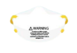
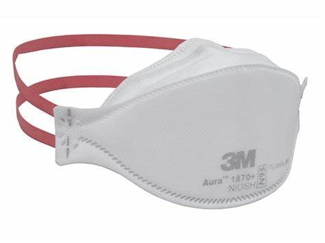
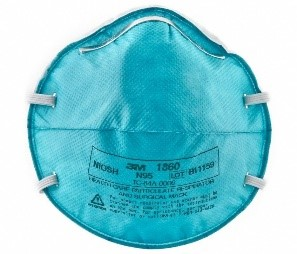
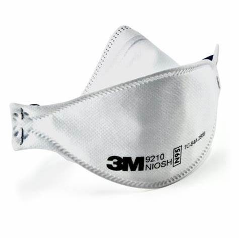

Kesehatan

Protokol Kesehatan
Penggunaan masker yang ditujukan oleh masyarakat maupun tenaga medis memiliki jenis dan standar yang berbeda-beda. Masker yang digunakan perlu disesuaikan dengan tingkat intensitas kegiatan tertentu. Berikut merupakan tipe dan klasifikasi masker yang perlu diketahui perbedaannya:
|
Jenis Masker |
 Masker Kain |
 Masker Kain Lapis 3 |
 Masker N95 |
 Masker Facepiece Respirator |
|---|---|---|---|
|  Masker N95 Respirator |
 Masker Bedah N95 Respiratory (1860) |
 Masker Bedah N95 Respirator (1870) |
 Masker N95 (9210) |
Tipe-Tipe Masker
1. Masker Kain
Masker kain dapat digunakan untuk mencegah penularan dan mengantisipasi kelangkaan masker yang terjadi. Efektivitas penyaringan pada masker kain meningkat seiring dengan jumlah lapisan dan kerapatan tenun kain yang dipakai. Masker kain perlu dicuci dan dapat dipakai berkali-kali. Bahan yang digunakan untuk masker kain berupa bahan kain katun, scarf, dan sebagainya. Penggunaan masker kain dapat digunakan untuk:
a. Bagi masyarakat sehat
Digunakan ketika berada di tempat umum dan fasilitas lainnya dengan tetap menjaga jarak 1-2 meter. Namun, jika masyarakat memiliki kegiatan yang tergolong berbahaya (misalnya, penanganan jenazah COVID-19, dan sebagainya) maka tidak disarankan menggunakan masker kain.
b. Bagi tenaga medis
Masker kain tidak direkomendasikan sebagai APD (Alat Pelindung Diri) untuk tingkat keparahan tinggi karena sekitar 40-90% partikel dapat menembus masker kain bagi tenaga medis. Masker kain digunakan sebagai opsi terakhir jika masker bedah atau masker N95 tidak tersedia. Sehingga, masker kain idealnya perlu dikombinasikan dengan pelindung wajah yang menutupi seluruh bagian depan dan sisi wajah.
2. Masker Bedah 3 Ply (Surgical Mask 3 Ply)
Masker Bedah memiliki 3 lapisan (layers) yaitu lapisan luar kain tanpa anyaman kedap air, lapisan dalam yang merupakan lapisan filter densitas tinggi dan lapisan dalam yang menempel langsung dengan kulit yang berfungsi sebagai penyerap cairan berukuran besar yang keluar dari pemakai ketika batuk maupun bersin.
Karena memiliki lapisan filter ini, masker bedah efektif untuk menyaring droplet yang keluar dari pemakai ketika batuk atau bersin, namun bukan merupakan barier proteksi pernapasan karena tidak bisa melindungi pemakai dari terhirupnya partikel airborne yang lebih kecil. Dengan begitu, masker ini direkomendasikan untuk masyarakat yang menunjukan gejala-gejala flu / influenza (batuk, bersinbersin, hidung berair, demam, nyeri tenggorokan) dan untuk tenaga medis di fasilitas layanan kesehatan.
3. Masker N95
Masker N95 adalah masker yang lazim dibicarakan dan merupakan kelompok masker Filtering Facepiece Respirator (FFR) sekali pakai (disposable). Kelompok jenis masker ini memiliki kelebihan tidak hanya melindungi pemakai dari paparan cairan dengan ukuran droplet, tapi juga hingga cairan berukuran aerosol. Masker jenis ini pun memiliki face seal fit yang ketat sehingga mendukung pemakai terhindar dari paparan aerosol asalkan seal fit dipastikan terpasang dengan benar.
Masker Filtering Facepiece Respirator (FFR) yang ekuivalen dengan N95 yaitu FFP2 (EN 149- 2001, Eropa), KN95 (GB2626-2006, Cina), P2 (AS/NZA 1716:2012, Australia/New Zealand), KF94 (KMOEL-2017-64, Korea), DS (JMHLW-Notification 214,2018, Jepang). Kelompok masker ini direkomendasikan terutama untuk tenaga kesehatan yang harus kontak erat secara langsung menangani kasus dengan tingkat infeksius yang tinggi. Idealnya masker N95 tidak untuk digunakan kembali, namun dengan stok N95 yang sedikit, dapat dipakai ulang dengan catatan semakin sering dipakai ulang, kemampuan filtrasi akan menurun. Jika akan menggunakan. Metode pemakaian kembali, masker N95 perlu dilapisi masker bedah pada bagian luarnya.
Masker kemudian dapat dilepaskan tanpa menyentuh bagian dalam (sisi yang menempel pada kulit) dan disimpan selama 3-4 hari dalam kantung kertas sebelum dapat dipakai kembali. Masker setingkat N95 yang sesuai dengan standar WHO dan dilapisi oleh masker bedah dapat digunakan selama 8 jam dan dapat dibuka dan ditutup sebanyak 5 kali. Masker tidak dapat digunakan kembali jika pengguna masker N95 sudah melakukan tindakan yang menimbulkan aerosol.